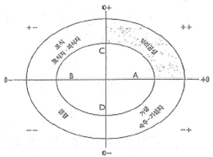
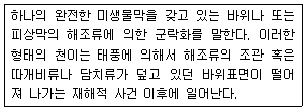
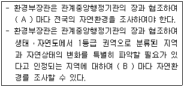
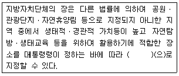
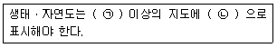
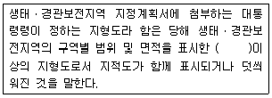

자연생태복원기사(구) (2016-03-06 기출문제)
1과목: 환경생태학개론
1. 해수지역과 기수지역에 서식하는 규조류를 비교해 볼 때 염분농도에 따라 기수지역에 서식하는 규조류의 특징을 바르게 설명한 것은?
- 생물 크기가 대체로 크다. 서식종의 종수가 많다
- 생물 크기가 대체로 작다. 서식종의 종수가 많다.
- 생물 크기가 대체로 크다. 서식종의 종수가 적다.
- 생물 크기가 대체로 작다. 서식종의 종수가 적다.
(정답률: 64%)

2. 자연보전구역의 설계에서 도서생물지리학의 원리에 적합하지 않는 것은?
- 면적이 큰 자연공원이 작은 자연공원보다 종보존에 효과적이다.
- 인접한 자연공원이 서로 가까울수록 종보전에 효과적이다.
- 자연공원의 전체면적이 한정된다면 큰 자연공원 하나가 이와 면적의 합의 같은 작은 자연공원 여러 개보다 종 보존에 효과적이다.
- 여러 개의 자연공원이 있을 경우 서로 같은 거리로 모여 있는 것보다 직선적으로 배열되는 것이 재정착이 쉬워진다.
(정답률: 90%)
3. 2000년 동해안에 대형 산불이 발생하여 막대한 임야가 손실되었다. 산불의 영향에 대한 설명으로 가장 거리가 먼 것은?
- 표토가 유실되어 해안과 하천의 생태계를 변화시킨다.
- 초본류는 산불에 비교적 적응하여 복원력이 교목보다 뛰어나다.
- 화재 후 연소된 유기물 잔재 속 광물질이 방출되어 지력을 높이고 토양을 비옥하게 한다.
- 인간은 유기물질이 위험한 수준까지 축적되기 전 일부러 불을 질러 생태계 관리수단으로 삼기도 한다.
(정답률: 62%)
4. 육상생태계에서 식물플랑크톤의 이상증식으로 인하여 일어나는 부영양화는 어떤 영양염류의 과잉유입으로 인하여 발생하는가?
- 질소, 인
- 인, 이산화탄소
- 이산화탄소, 단백질
- 단백질, 질소
(정답률: 86%)
5. 영양단계 및 생물농축에 대한 설명에서 가장 거리가 먼 것은?
- 에너지와는 달리 화학물질은 영양단계가 높아질수록 그 농도가 높아진다.
- 화학물질이 생태계내로 유입되었을 경우 나타나는 bottom-up 효과가 심각한 문제로 대두된다.
- 피식자는 포식자보다 체내에 축적되어 있는 오염물질을 보다 많이 섭식하게 된다.
- 자연적으로 분해가 잘 되지 않는 오염물질은 동물체내의 특정조직에 선택적으로 축적된다.
(정답률: 81%)
6. 다음 그림 중 편리공생의 위치를 나타내는 것은?

- A
- B
- C
- D
(정답률: 88%)
7. 생물 개체군 성장곡선에 대한 설명으로 틀린 것은?
- J자형, S자형 성장곡선이 나타난다.
- J자형 성장곡선은 외부 환경요인에 의해 조절된다.
- S자형 성장곡선은 불안정한 하등생물상에서 보여진다.
- 수용한계(수용능력 K)는 최적밀도 수준이 아니다.
(정답률: 81%)
8. 생태계의 물질 순환 중 질소순환에 대한 설명으로 적합한 것은?
- 바다에서 육지로 대기권을 통하여 순환하며, 침적토에 큰 저장소가, 대기에 작은 저장소가 있다. 아미노산의 형태로 섭취된다.
- 원형질과 물질을 구분하는 에너지 전환에 필요불가결한 원소로서 토양 속에서 불용상태로 존재하여 식물생장의 제한요인으로 작용한다.
- 대기 중의 약 80%를 차지하지만 생물이 바로 이용할 수 없으므로 박테리아를 통하거나 일정한 과정을 거쳐 흡수가능한 염의 형태로 변환하여 생물체내에 흡수한다.
- 식물의 잎에서 광합성 작용에 의해 당, 지방, 단백질 등의 형태로 이산화탄소를 동화하고 흡수하여 영양물질이 되어 식물체내에 축적되거나 먹이사슬을 통해 동물로 이동되기도 한다.
(정답률: 87%)
9. 수생식물의 생활형 특성 중 정수식물(추수식물)로만 구성된 것은?
- 부들, 갈대
- 줄, 수련
- 연꽃, 고랭이
- 어리연꽃, 자라풀
(정답률: 82%)
10. 생태계의 구성요소 중 생물적 요소에 해당되지 않는 것은?
- 영양적 지위
- 소비자
- 생산자
- 분해자
(정답률: 86%)
11. 해안군집의 유형에 속하지 않는 것은?
- 갯벌
- 하구
- 암반해안
- 건초지
(정답률: 90%)
12. 생물이 생태계에 차지하는 구조적, 기능적 역할을 종합적으로 나타내는 개념은?
- 생태적 지위
- 길드
- 지위유사종
- 주행성
(정답률: 89%)
13. 초본식물들이 주종을 이루고 키가 낮은 종려나무, 아카시아가 우점하며 옥시솔토양이 우세한 지역은?
- 초원
- 열대사바나
- 툰드라
- 열대우림
(정답률: 62%)
14. 육상개발과 관련하여 해양으로 유입된 토사가 연안생태계에 미치는 피해에 해당되지 않는 것은?
- 식물의 1차 생산력 증가
- 동물의 질식
- 독성물질의 증가
- 저서동물권의 구조변화
(정답률: 82%)
15. 엘리뇨 현상에 대한 설명으로 틀린 것은?
- 열대 남미 페루연안까지 영향을 미치는 현상이다.
- 해수면의 온도가 평년보다 낮아지는 현상이다.
- 무역풍이 약해지는 경우 발생한다.
- 인도네시아, 필리핀에서는 대체로 가뭄이 발생하곤 한다.
(정답률: 80%)
16. 생태계 내 에너지에 대한 설명으로 옳은 것은?
- 일정한 생태계 내에서 에너지는 물질과 함께 순환하여 소멸되지 않는다.
- 고사한 식물체나 초식동물이 소화할 수 없는 배설물의 에너지는 육식동물이 이용한다.
- 광합성으로 유기물에 저장된 에너지의 일부는 녹색식물의 생장과 유지를 위한 호흡으로 이용된다.
- 동물은 성장과 생식을 위해 에너지를 필요로 하며 식물과는 달리 화학합성을 통해 에너지를 물질로 변환 이용한다.
(정답률: 80%)
17. 야생동물의 이동 통로의 계획 및 설계 단계에서 고려될 사항이 아닌 것은?
- 모니터링 계획 수립
- 위치의 선정
- 목표종의 선정
- 충돌방지 및 유도방안 마련
(정답률: 67%)
18. 다음 중 에너지 효율이 가장 높은 것은?
- 토끼풀
- 뱀
- 개구리
- 메뚜기
(정답률: 68%)
19. 다음 내용은 해안가의 암반에 있어서의 몇 차 천이에 해당하는가?

- 1차 천이
- 2차 천이
- 3차 천이
- 4차 천이
(정답률: 76%)
20. 습지 인식을 위한 습지의 중요 구성요소 3가지에 포함되지 않는 것은?
- 습지 수문
- 습지 동물
- 습지 식물
- 습윤 토양
(정답률: 71%)
2과목: 환경계획학
21. 국토환경성평가도의 활용에 대한 설명으로 가장 거리가 먼 것은?
- 도시계획 수립에 있어 계획가에게 판단의 기초자료로 활용이 가능하다.
- 택지개발 등 지구선정 및 개발사업계획 작성에 활용한다.
- 산림보호지역 등 자연환경보전을 위한 보호구역 지정에 활용한다.
- 관광권계획, 지역계획 등 행정계획의 수립에 활용이 가능하다.
(정답률: 46%)
22. 생태네트워크의 구성요소가 아닌 것은?
- 핵심지역
- 완충지역
- 경계지역
- 생태적 코리더
(정답률: 80%)
23. 생태공원 조성의 기본 이념이 아닌 것은?
- 지속 가능성
- 생태적 건전성
- 생물적 단일성
- 인위적 에너지 투입 최소화
(정답률: 86%)
24. 자연자원을 관리하는 방법 중 생태계가 지속되는 것이 가능하도록 하는 과정 및 유형의 영구화를 목적으로 생태계를 관리하는 것은?
- 적응적 생태계 관리
- 지속적 생태계 관리
- 생태적 생태계 관리
- 영구적 생태계 관리
(정답률: 38%)
25. 하천복원에 대한 설명으로 틀린 것은?
- 하천 복원의 대상은 기본적으로 하도를 포함한 홍수터, 강터, 제방 등이 될 수 있다.
- 하천복원은 하천에 교란을 주는 활동이나 자연적인 회복을 막는 활동 등을 가능한 억제하는 것으로부터 시작한다.
- 넓은 의미에서 하천복원은 경관생태적으로 하천과 연속한 주변회랑과 같은 수변을 포함한다.
- 자연적인 회복이 불가능할 경우는 최대한 비적극적이고 비간섭적인 복원방법이 바람직하다.
(정답률: 79%)
26. 도시 및 지역차원의 환경계획으로 생태네트워크의 개념이 아닌 것은?
- 공간계획이나 물리적 계획을 위한 모델링도구이다.
- 기본적으로 개별적인 서식처와 생물종을 목표로 한다.
- 지역적 맥락에서 보전가치가 있는 서식처와 생물종의 보전을 목적으로 한다.
- 전체적인 맥락이나 구조측면에서 어떻게 생물종과 서식처를 보전할 것인가에 중점을 둔다.
(정답률: 77%)
27. 환경영향평가를 설명하는 것으로 틀린 것은?
- 환경영향의 사전 예측
- 의사결정의 참고 수단
- 환경관리기능의 수행
- 사업계획과 독립된 분석ㆍ평가 절차
(정답률: 68%)
28. 자연환경조사에 관한 설명의 A,B 에 적합한 조사주기를 순서대로 작성한 것은?

- 5년, 1년
- 5년, 2년
- 10년, 1년
- 10년, 2년
(정답률: 70%)
29. 「국토의 계획 및 이용에 관한 법률」상 용도지구 중 중분류 지역으로만 묶여진 것은?
- 주거지역, 상업지역, 공업지역, 녹지지역
- 주거지역, 상업지역, 관리지역, 농림지역
- 관리지역, 공업지역, 농림지역, 자연환경보전지역
- 도시지역, 관리지역, 농림지역, 자연환경보전지역
(정답률: 56%)
30. 「국토의 계획 및 이용에 관한 법률」상 용도지구 중에서 보존지구에 대한 설명은?
- 화재의 위험을 예방하기 위하여 필요한 지구
- 풍수해, 산사태, 지반의 붕괴, 그 밖의 재해를 예방하기 위하여 필요한 지구
- 문화재, 중요 시설물 및 문화적ㆍ생태적으로 보존가치가 큰 지역의 보호와 보존을 위하여 필요한 지구
- 쾌적한 환경 조성 및 토지의 효율적 이용을 위하여 건축물 높이의 최저한도 또는 최고한도를 규제할 필요가 있는 지구
(정답률: 80%)
31. 환경친화적 주거단지계획의 기본목표에 맞지 않는 것은?
- 자연 생태적 오픈 스페이스의 창출
- 주민 공동시설의 확충
- 쾌적한 단지 분위기의 창출
- 적정한 물순환의 유지
(정답률: 73%)
32. 토지이용계획의 역할에 대한 설명으로 가장 거리가 먼 것은?
- 토지이용의 규제와 실행수단의 제시 기능
- 세부 공간환경설계에 대한 지침제시의 역할
- 사회의 지속가능성을 위한 토지의 보전 기능
- 토지의 개발이 소유자에 의해 자의적으로 이루어지게 하는 기능
(정답률: 81%)
33. 농촌이 고유하게 지닌 자연 및 문화, 공동체 유산 등 농촌에 산재한 부존자원의 중요성을 재발견하고 이를 지속가능한 농촌사회를 만드는 기틀로 삼으려는 인식이 확산되고 있다. 농촌의 다원기능과 어메니티의 차이점 중 어메니티의 내용으로 가장 거리가 먼 것은?
- 공세적(적극적) 개념
- 개발도상국이 선호하는 논리
- 공익의 바탕 위에 사익과도 공존
- 자생적 발전을 도모하는 농촌 내부의 논리
(정답률: 73%)
34. 자연환경보전법상의 설명으로 ( )에 가장 적합한 것은?

- 생태공원
- 자연휴식지
- 생태관광지
- 자연탐방ㆍ생태교육장
(정답률: 39%)
35. 생물공동체의 서식처, 어떤 일정한 생물집단 및 입체적으로 다른 것들과 구분될 수 있는 생물집단의 공간영역으로 정의될 수 있는 환경계획의 공간 차원은?
- 비오톱
- 생태공원
- 산림
- 지역사회
(정답률: 85%)
36. 생태공원 조성계획 시 고려되어야 할 사항으로 적합하지 않는 것은?
- 다양한 소생물권 형성과 서식처 보호는 물론 자연관찰 활동공간을 고려하도록 한다.
- 입지선정은 도시 내에 잔존하는 수림지, 초지, 수변공간 등이 인접한 지역을 우선으로 한다.
- 공원 내 식생은 소나무 중심으로 조성하여 늘 푸른 경관을 연출하도록 한다.
- 야생동물의 서식 및 산란이 이루어지는 민감한 지역은 이용제한구역 혹은 출입금지 구역을 필요에 따라 마련하도록 한다.
(정답률: 80%)
37. 국토의 난개발을 방지하고 개발과 보전의 조화를 유도하기 위하여 국토의 계획 및 이용에 관한 법률에 따라 도시관리 계획의 기초조사로서 토지의 토성, 입지, 활용 가능성, 보존 필요성 등을 평가하는 제도는?
- 토지적성평가
- 토지환경성평가
- 사전환경성 검토
- 환경영향평가
(정답률: 69%)
38. 주거단지에서 녹지가 가지는 기능과 가장 거리가 먼 것은?
- 미기후 조절
- 소음방지
- 대기전화
- 폐기물처리
(정답률: 80%)
39. 환경영향평가제도에 대한 설명으로 가장 부적합한 것은?
- 개발과 보전의 균형추구
- 개발사업에 대한 규제적 수단으로 변질되었다는 일부의 문제점 제기
- 계획이 확정되기 이전 단계에서 환경에 영향을 미치는 근본적인 문제 검토
- 개발사업을 수립ㆍ시행하는데 있어 환경적 측면까지 종합적으로 고려하도록 함
(정답률: 54%)
40. 우리나라의 환경영향평가제도에 대한 설명으로 틀린 것은?
- 1977년 환경보전법에 의해 도입
- 1993년 환경영향평가법 단일법으로 제정
- 2000년 환경ㆍ교통ㆍ재해 등에 관한 영향평가법으로 통합 시행
- 2006년 환경영향평가법으로 다시 분리
(정답률: 46%)
3과목: 생태복원공학
41. 야생동물 이동 통로의 형태 중 훼손 횡단부위가 넓고, 절토 지역 또는 장애물 등으로 동물을 위한 통로설치가 어려운 지역에 만들어지는 통로는?
- Culvert
- Shelterbelt
- Box
- Overbridge
(정답률: 80%)
42. 다음 중 기능의 연결이 잘못된 것은?
- 수림대- 강풍의 통과
- 가로수- 녹음수 역할
- 콘크리트벽면녹화- 일광반사 방지
- 녹지 조성- 도시기후 완화
(정답률: 74%)
43. 자연환경보전지역의 산림에서 5천제곱미터의 채굴사업 훼손 면적이 발생했을 경우 생태보전협력금은?
- 6백만원
- 1천5백만원
- 2천5백만원
- 3천만원
(정답률: 64%)
44. 생태복원계획 및 설계과정이 옳게 나열된 것은?
- 조사 →분석→ 계획→ 평가→ 목표설정→ 설계→ 시공→ 관리
- 조사 →분석→ 평가→ 목표설정→ 계획→ 설계→ 시공→ 관리
- 목표설정→ 조사 →분석→ 계획→ 관리→ 설계→ 시공→ 평가
- 목표설정→ 조사 →분석→ 계획→ 평가→ 설계→ 시공→ 관리
(정답률: 66%)
45. 녹화용 자생식물 중에서 그 특성(꽃, 형태, 관상 및 생태 등)이 바르게 연결된 것은?
- 구상나무- 4월 갈색 개화- 낙엽침엽성- 열매의 관상가치
- 쪽동백나무- 5월 붉은색 개화- 상록활엽성- 꽃과 열매의 관상가치
- 층층나무- 5월 붉은색 개화- 상록활엽성- 어릴 때 생장속도 느림
- 노각나무- 6월 흰색 개화- 낙엽활엽성- 꽃과 줄기의 관상가치
(정답률: 63%)
46. 습지에 대한 설명으로 가장 거리가 먼 것은?
- 습지의 매립은 표면수의 유출을 막으므로 오염을 감소시키는 효과가 있다.
- 습지에 대한 여러 형태의 교란은 보트, 수영, 조류관찰, 낚시 등에 대한 기회를 감소시킨다.
- 습지지형이나 식생을 파괴하는 행위는 습지의 표면유출에 대한 필터기능의 저하를 가져와 하류 저수지의 탁도 및 퇴적을 증가시킨다.
- 습지는 홍수 저장능력이 있는데 제방 등을 쌓아 물의 흐름이 저해되는 경우 수위가 높아져 흐름이 빨리지고 인근지역에 피해를 초래한다.
(정답률: 67%)
47. 생태와 관련된 설명으로 부적합한 것은?
- 비간섭거리: 조류가 인간의 모습을 포착하고도 달아나거나 경계의 자세를 취하는 일이 없이 계속 먹거나 휴식을 취할 수 있는 거리
- 도피거리: 인간이 접근함에 따라 단숨에 장거리를 날아가면서 도피를 시작하는 거리
- 회피거리: 인간이 접근했을 시 가볍게 뛰기도 하면서 하고 있던 행동을 중지하고 경계음 등을 내면서 그 장소에서 하던 행위를 조심스레 계속하는 거리
- 임계거리: 일반적으로 도주거리와 공격거리간의 임계반응을 나타내는 거리의 폭
(정답률: 65%)
48. 생태복원용 교목 및 아교목의 식재가 가능한 사면의 경사는?
- 25% 이하
- 45% 이하
- 66% 이하
- 75% 이하
(정답률: 60%)
49. 종자가 붙은 식물 개체를 녹화할 장소에 이식하여 그곳으로부터 자연스럽게 파종하는 것으로서 주위에 개체수를 늘리는 식물종 조달 방법은?
- 소스이식
- 표토채취
- 매트이식
- 근주이식
(정답률: 62%)
50. 하천생태계에 대한 설명으로 가장 거리가 먼 것은?
- 하천생태계를 이루는 기본적인 요소는 하천에 유입되는 물질과 에너지, 하천 형태나 물의 흐름에 따라서 만들어지는 서식장소, 생물의 세 가지로 볼 수 있다.
- 하천의 생물 서식지는 하상 형태 및 물의 흐름과 관련이 깊으며 여울과 연, 부석대등은 수역의 대표적인 서식지이다.
- 부엽식물, 침수식물대로서 물 흐름이 고요하여 유량이 안정된 수역에는 개연꽃등의 침수식물과 말즘이나 검정말 등의 부엽식물이 번성하여, 이곳은 어류의 산란장소나 치어의 생육장소로 이용된다.
- 운반하던 퇴적물이 침전하여 물속에 퇴적지형을 이루고, 이 퇴적지형이 점차 수면 가까이로 성장하면 수초가 자라게 되고 이로인해 유속이 느려져 더 많은 퇴적물이 집적되는데 수면위로 드러난 것을 "하중도"라고 한다.
(정답률: 56%)
51. 천이의 설명으로 가장 거리가 먼 것은?
- 일반적으로 선구식생에서 중간식생을 거쳐 극상에 이른다.
- 천이의 초기단계에서는 성장속도가 빠르고 산포능력이나 휴면성이 있는 종자를 지닌 식물이 유리하다.
- 진행천이(1차 천이)과정은 나지→ 다년생초본기→ 1,2년생 초본기→ 관목림기→ 내음성 교목림기→ 호양성 교목림기와 같이 군락의 종조성이나 생활형의 변화로써 파악할 수 있다.
- 천이초기에는 입지조건과 더불어 이입과 정착의 과정이 중요하다. 따라서 종의 공급원의 공급 유무에 따라 천이의 진행방법은 크게 달라진다.
(정답률: 80%)
52. 수질정화 습지의 조성을 위한 고려사항이 아닌 것은?
- 인의 제거에 적당한 고부하 유입수가 있어야 한다.
- 수질정화를 극대화할 수 있는 충분한 습지가 확보되어야 한다.
- 수질정화가 왕성하게 일어나는 저습지대의 식생은 주로 부수식물로 구성되어야 한다.
- 조성 후에는 식생관리가 필요하며, 정화기능을 극대화시키기 위하여 1년 1회 이상 절취하는 작업을 해주면 좋다.
(정답률: 61%)
53. 부유식물에 해당하는 습지식물은?
- 애기부들
- 마름
- 생이가래
- 물수세미
(정답률: 70%)
54. 자연환경보전법상 생태ㆍ자연도의 등급기준 중 별도관리지역에 해당하는 것은?
- 생물의 지리적 분포한계에 위치하는 생태계 지역 또는 주요 식생의 유형을 대표하는 지역
- 장차 보전의 가치가 있는 지역 또는 1등급 권역의 보호를 위하여 필요한 지역
- 「야생생물 보호 및 관리에 관한 법률」에 따른 멸종위기 야생생물의 주된 서식지ㆍ도래지 및 주요 생태축 또는 주요 생태통로가 되는 지역
- 다른 법률의 규정에 의하여 보전되는 지역 중 역사적ㆍ문화적ㆍ경관적 가치가 있는 지역이거나 도시의 녹지보전 등을 위하여 관리되고 있는 지역으로서 대통령령이 정하는 지역
(정답률: 65%)
55. 폐도로 복원을 위한 지형 복원방법으로 잘못된 것은?
- 주변 생태계와 자연스럽게 연결되도록 한다.
- 훼손되기 이전의 원지형에 대한 자료를 분석한다.
- 복원할 식생과의 관련성을 고려하여 지형을 조작한다.
- 도로 개발 시 도입한 인공 포장체 위에 복토하여 지형을 조작한다.
(정답률: 85%)
56. 매토종자에 대한 설명으로 가장 거리가 먼 것은?
- 매토종자란 토양속에서 휴면상태로 생존하는 종자를 말한다.
- 복원지역에서 식물군집의 성립가능성을 알기 위해 중요하다.
- 매토종자 집단의 조성은 1차 천이의 초기상에 성립하는 식생을 크게 좌우한다.
- 수명이 1년 미만인 계절적 매토종자와 1년 이상인 영속적 매토종자로 구분할 수 있다.
(정답률: 18%)
57. 비탈면녹화를 위한 식생군락의 조성 시 고려해야 할 내용으로 가장 거리가 먼 것은?
- 주변 식생과 동화
- 식생의 안정 및 천이
- 비탈면 주변의 생태계를 고려
- 급속 녹화를 위한 단순식생의 군락 조성
(정답률: 82%)
58. 유속(m/sec)을 나타낸 관계식으로 맞는 것은? (단, Q:유량, A:유적, P:윤변, R:경심)
- V= Q/P
- V= Q/R
- V= Q/A
- V= QㆍA
(정답률: 72%)
59. 비탈다듬기 공사를 하고 뜬 흙을 정리 후 흩어뿌리기할 때 참억새와 혼파조합으로 양호한 것은?
- 참싸리
- 비수리
- 매듭풀
- 차풀
(정답률: 65%)
60. 2000 m2 의 면적에 발생기대본수 2000(본/m2)을 파종하고자 할 때 파종량(kg)은? (단, 발아율 50%, 평균입수 2000 입/g, 순량률 80%)
- 2.5
- 5
- 2500
- 5000
(정답률: 47%)
4과목: 경관생태학
61. 하천 코리더의 상류와 하류에 대한 설명으로 가장 거리가 먼 것은?
- 상류는 급한 경사와 빠른 유속을 갖는다.
- 상류의 수온은 높고 하류는 낮다
- 하류로 갈수록 하천의 폭이 넓어지고 용존산소가 낮아진다.
- 상류에는 높은 용존산소를 요구하는 어류가 서식한다.
(정답률: 77%)
62. 보전생물학, 복원생태학, 보전생물학의 특징을 설명한 것으로 가장 거리가 먼 것은?
- 보전생물학은 개별 종의 멸종을 최소화하는데 관심을 갖는다.
- 경관생태학은 전체 경관에 주목하며, 메타개체군 이론에 관심을 갖고 있다.
- 복원생태학은 대형 포유류 등과 같은 척추동물의 복원에 동물행동학이 중요한 원리이다.
- 복원생태학이나 경관생태학 모두 생물다양성의 보전이라는 공통의 목표를 가지고 있다.
(정답률: 65%)
63. 생태계 완결성 회복을 위한 생태복원에 대한 설명으로 가장 거리가 먼 것은?
- 채석 적지는 적절한 복구가 이뤄지지 않으면 침출수에 의한 하류지역의 수질오염이 야기될 수 있다.
- 도로비탈면은 식생천이가 일어나지 않으므로 곤충과 조류의 다양화가 일어나지 않는다.
- 도시생태계 내에서 옥상녹화는 녹지총량의 증대에 기여한다.
- 광산의 개발과 복원의 동시진행은 채취된 식생과 토양을 복원에 재활용할수 있어 바람직하다.
(정답률: 74%)
64. 도로 비탈면의 식생복원 효과에 대한 설명으로 가장 거리가 먼 것은?
- 서식권의 연속성 확보
- 사면붕괴 위험 증진
- 유전적 격리의 해소
- 표토의 침식방지
(정답률: 79%)
65. 주연부 효과에 대한 설명으로 틀린 것은?
- 주연부 효과란 군집의 가장자리가 종밀도와 종다양성이 높은 것을 말한다.
- 숲의 가장자리에 키 작은 나무(관목)가 빽빽하게 자란다.
- 추이대에서도 주연부 효과가 나타난다.
- 주연부 효과는 패치의 중심부까지 깊게 나타난다.
(정답률: 75%)
66. 경관생태학 발달에 최초의 공헌을 한 학문분야는?
- 수학
- 물리학
- 지리학
- 동물분류학
(정답률: 82%)
67. 조류의 메타개체군에 대한 설명으로 틀린 것은?
- 삼림의 크기가 커질수록 종 풍요도가 높다
- 비슷한 크기의 삼림에서는 삼림이 울창할수록 종 풍요도가 높다
- 비슷한 크기의 삼림에서는 가장자리 밀도가 낮을수록 종 풍요도가 높다
- 이웃 삼림과의 거리가 가까워질수록 종풍요도가 높다.
(정답률: 82%)
68. 지리정보체계(GIS)의 5대 요소가 아닌 것은?
- 지도자료
- 소프트웨어
- 프로세스
- 이용자
(정답률: 67%)
69. 비오톱 보전 및 조성의 원칙에 부합하지 않은 것은?
- 본래의 자연환경을 복원하고 보전하기 위하여 자연환경의 파악은 필수 조건이다.
- 순수한 자연생태계의 보전 및 복원을 위하여 사람들이 들어가지 않는 핵심지역을 설정한다.
- 비오톱 조성설계에 지역의 고유한 소재보다는 쉽게 구할 수 있는 소재를 우선하도록 한다.
- 회복, 보전할 생물의 지속적인 보존을 위하여 이에 상응하는 수질의 용수를 확보하도록 한다.
(정답률: 78%)
70. 틈 분석 내용으로 가장 거리가 먼 것은?
- 야생동물의 적절한 또는 최소한의 보전장소를 지정하기 위해 활용한다.
- 지리정보체계를 이용하여 종 분포에 대한 정보를 파악한다.
- 생태계 다양성을 포함하는 공원계획에 활용 가능하다.
- 비생물적인 요소는 고려할 필요가 없다.
(정답률: 79%)
71. 토지가 변형되는 공간 과정의 설명으로 틀린 것은?
- 천공화는 토지변형의 과정에서 드물게 발생한다.
- 마멸은 패치 및 통로와 같은 것이 사라지는 것이다.
- 축소는 패치와 같은 물체의 크기가 감소하는 것이다.
- 단편화는 서식지 또는 토지가 작은 부분들로 나뉘는 것이다.
(정답률: 63%)
72. 다음 중 경관생태 연구의 접근방법 설명으로 가장 거리가 먼 것은?
- 학제간 연구
- 총체적 관점
- 상호보완적 관계
- 동물 중심적 관점
(정답률: 73%)
73. 도시생태계에 대한 설명으로 가장 거리가 먼 것은?
- 외부로부터 물질과 에너지를 공급받는 생태계
- 생물군집과 비생물관경 사이에 물질순환이 이루어지는 생태계
- 태양에너지와 화석에너지에 의존하는 종속영양계
- 특정 환경에 적응한 종이 우세하게 나타나는 생태계
(정답률: 64%)
74. 도시녹지의 양을 증대하기 위한 방법과 관계가 없는 것은?
- 녹지의 수 증가
- 녹지의 규모 확대
- 녹지의 종류 증가
- 녹지 사이의 거리 축소
(정답률: 63%)
75. 농촌환경복원전략으로 가장 거리가 먼 것은?
- 농촌경관의 전통적인 경관구조를 바탕으로 경관구조의 기본을 살린 복원을 실시한다.
- 복원하고 싶은 생태계 중에서 고차소비자를 중심으로 비오톱을 형성한다.
- 생물공간을 이어서 서로 연속되는 비오톱을 구현한다.
- 농촌경제의 활성화를 위하여 에너지보조를 통한 생산성 증대를 모색한다.
(정답률: 48%)
76. 생태적 동태를 고려한 생태계획의 유형을 지칭하는 것은?
- 적응적 계획
- 공원녹지 계획
- 지구단위 계획
- 경관 계획
(정답률: 57%)
77. 동물의 이동에 대한 예측과 저감 대책 수립 시 도움이 되는 경관생태학적 요소는?
- 패치
- 통로
- 바탕
- 변화
(정답률: 64%)
78. 파편화의 정도를 측정할 때 고려하는 항목으로 가장 거리가 먼 것은?
- 매트릭스의 형태
- 파편화된 패치의 배열
- 파편화된 각 패치의 면적
- 파편화된 각 패치간의 이격거리
(정답률: 67%)
79. 파편화에 민감하여 멸종 가능성이 높은 종이 아닌 것은?
- 지리적인 분포범위가 넓은 종
- 개체군 크기가 작은 종
- 넓은 행동권을 요구하는 종
- 종의 확산이 어려운 종
(정답률: 57%)
80. 경관생태연구의 공간 구조적 측면을 가장 잘 설명하고 있는 것은?
- 개체군의 파악에 중점을 둔다.
- 생물종의 생리적 특성을 주로 연구한다.
- 에너지 흐름 및 물질 순환 작용을 중요하게 다룬다.
- 서로 다른 경관조각들의 배열상태 위치 및 영역성 등의 관점을 주로 파악한다.
(정답률: 77%)
5과목: 자연환경관계법규
81. 국토의 계획 및 이용에 관한 법률 시행령상 기반시설 중 세분화한 도로에 해당하지 않는 것은?
- 지하도로
- 보차혼용도로
- 자전거전용도로
- 보행자전용도로
(정답률: 76%)
82. 국토기본법상 국토종합계획에 관한 내용으로 옳은 것은?
- 국토교통부장관은 사회적ㆍ경제적 여건변화를 고려하려 5년마다 국토종합계획을 전반적으로 재검토하고 필요하면 정비하여야 한다.
- 시ㆍ도지사 등은 국토종합계획의 내용을 소관업무와 관련된 정책 및 계획에 반영하여야 하며, 국토해양부령으로 정하는 바에 따라 국토종합계획을 실행하기 위한 소관별 실천계획을 구청장이 수립하도록 하여야 한다.
- 국토교통부장관으로부터 국토종합계획을 조정할 것을 요청받은 지방자치단체의 장이 특별한 사유없이 이를 반영하지 아니하는 경우에는 국토균형개발심의위원회에서 시민공청회를 실시하여 조정해야 한다.
- 국토교통부장관은 지방자치단체의 장이 행하는 국토계획 시행사업이 서로 상충되어 국토계획의 원활한 실시에 지장을 초래할 우려가 있다고 인정되어도 당해 계획을 조정할 것을 요청할 수 있는 권한은 없다.
(정답률: 54%)
83. 백두대간 보호에 관한 법률에서 산림청장과 지방자치단체의 장은 보호지역에 거주하는 주민 또는 보호지역에 토지를 소유하고 있는 자에 대한 주민지원사업을 수립 시행하는데, 이에 해당되지 않는 사업은?
- 야생동물의 인공증식시설의 설치사업
- 자연환경 보전 이용 시설의 설치사업
- 수도시설의 설치 지원 등 복지 증진사업
- 농림축산업 관련 시설 설치 및 유기영농 지원 등 소득증대사업
(정답률: 52%)
84. 야생동물 보호 및 관리에 관한 법률에서 정하고 있는 멸종위기 야생생물Ⅰ급의 곤충류에 해당하지 않는 것은?
- 산굴뚝 나비
- 상제나비
- 수염풍뎅이
- 애기뿔쇠똥구리
(정답률: 61%)
85. 다음은 자연환경보전법상 생태ㆍ자연도의 작성 및 활용기준이다. ( )에 알맞은 것은?

- ㉠2만 5천만분의 1, ㉡점선
- ㉠5만분의 1, ㉡점선
- ㉠2만 5천만분의 1, ㉡실선
- ㉠5만분의 1, ㉡실선
(정답률: 18%)
86. 자연환경보전법령상 멸종위기 야생동ㆍ식물, 또는 보호야생동ㆍ식물의 보호를 위하여 사업개발을 제한할 수 있는 사업은?
- 폐광지역 개발에 관한 특별법 규정에 의한 폐광지역 개발사업
- 공유수면 매립법에 의한 매립사업
- 광산법 규정에 의한 전용허가 대상사업
- 하천법 규정에 의한 골재채취 허가대상사업
(정답률: 63%)
87. 습지보전법상 용어의 정의로 옳지 않은 것은?
- "습지"라 함은 담수ㆍ기수 또는 염수가 영구적 또는 일시적으로 그 표면을 덮고 있는 지역으로서 내륙습지 및 연안습지를 말한다.
- "내륙습지"라 함은 육지 또는 섬에 있는 호수, 못, 높 또는 하구 등의 지역을 말한다.
- "연안습지"라 함은 만조 시에 수위선과 지면이 접하는 경계선 지역을 말한다.
- "습지의 훼손"이라 함은 배수ㆍ매립 또는 준설 등의 방법으로 습지 원래의 형질을 변경하거나 습지에 시설 또는 구조물을 설치하는 등의 방법으로 습지를 보전외에 용도로 사용하는 것을 말한다.
(정답률: 64%)
88. 백두대간 보호에 관한 법률상 핵심구역 안에서 규정을 위반하여 허용되지 않는 행위를 한 자에 대한 벌칙기준으로 옳은 것은?
- 10년 이하의 징역 또는 7천만원 이하의 벌금
- 7년 이하의 징역 또는 5천만원 이하의 벌금
- 5년 이하의 징역 또는 3천만원 이하의 벌금
- 3년 이하의 징역 또는 2천만원 이하의 벌금
(정답률: 62%)
89. 농지법상 농업진흥구역에서 가능한 토지이용행위에 해당하지 않는 것은?
- 폐수배출시설의 설치
- 국방, 군사시설의 설치
- 비석이나 기념탑의 설치
- 어린이놀이터 설치
(정답률: 59%)
90. 환경정책기본법령상 환경기준으로 옳지 않은 것은?
- 오존 1시간 평균치 0.1 ppm 이하
- 아황산가스 24시간 평균치 0.⑤ ppm 이하
- 이산화질소 24시간 평균치 0.06 ppm 이하
- 일산화탄소 1시간 평균치 0.15 ppm 이하
(정답률: 54%)
91. 자연환경보존법령상 생태ㆍ경관보전지역 지정에 사용하는 지형도에 대한 설명 중 ( )에 알맞은 것은?

- 축척 5천분의 1
- 축척 2만 5천분의 1
- 축척 5만분의 1
- 축척 10만분의 1
(정답률: 45%)
92. 자연공원법령상 자연공원의 자연자원조사는 특별한 경우를 제외하고 몇 년마다 실시하여야 하는가?(오류 신고가 접수된 문제입니다. 반드시 정답과 해설을 확인하시기 바랍니다.)
- 3년
- 5년
- 10년
- 15년
(정답률: 24%)
93. 자연환경보전법상 자연환경보전기본계획에 포함되어야 할 사항으로 가장 적합한 것은? (단, 그 밖에 자연환경보전에 관하여 대통령령이 정하는 사항은 제외한다.)
- 야생동ㆍ식물의 서식실태조사에 관한 사항
- 생태계교란야생동ㆍ식물의 관리에 관한 사항
- 생태축의 구축ㆍ추진에 관한 사항
- 수렵의 관리에 관한 사항
(정답률: 62%)
94. 농지법상 농지 소유에 관한 설명으로 옳지 않은 것은?
- 국가는 농지를 소유할 수 없다.
- 주말ㆍ체험영농(농업인이 아닌 개인이 주말등을 이용하여 취미생활이나 여가활동으로 농작물을 경작하거나 다년생식물을 재배하는 것)을 위하여 농지를 소유할 수 있다.
- 개인이 상속에 의하여 농지를 취득하여 소유할 수 있다.
- 원칙적으로 자기의 농업경영에 이용하거나 이용할 자가 아니면 농지를 소유하지 못한다.
(정답률: 68%)
95. 환경정책기본법상 국가 및 지방자치단체가 환경에 관계되는 법령을 제정 또는 개정하거나 행정계획의 수립 또는 사업의 집행을 할 때에 환경기준이 적절히 유지되도록 고려해야 할 사항이 아닌 것은?
- 환경오염지역의 원상회복
- 환경 악화의 예방 및 그 요인의 제거
- 환경오염원 및 오염물질 배출량의 예측
- 새로운 과학기술의 사용으로 인한 환경오염 및 환경훼손의 예방
(정답률: 40%)
96. 국토의 계획 및 이용에 관한 법률상 용도지역안에서 건폐율의 최대한도 기준으로 옳지 않은 것은?
- 농림지역: 20퍼센트 이하
- 자연환경보전지역: 20퍼센트 이하
- 도시지역 중 녹지지역: 20퍼센트 이하
- 관리지역 중 계획관리지역: 20퍼센트 이하
(정답률: 63%)
97. 국토의 계획 및 이용에 관한 법률에 관한 설명으로 옳지 않은 것은?
- 도시ㆍ군기본계획이란 특별시ㆍ광역시ㆍ시 또는 군의 관할구역에 대하여 기본적인 공간구조와 장기발전방향을 제시하는 종합계획으로서 도시ㆍ군관리계획수립의 지침이 되는 계획이다.
- 도시ㆍ군기본계획은 광역도시계획에 부합되어야 하나 도시ㆍ군관리계획은 반드시 광역도시계획에 부합되어야 하는 것은 아니다.
- 도시ㆍ군계획은 특별시ㆍ광역시ㆍ시 또는 군의 관할구역에서 수립되는 다른 법률에 따른 토지의 이용ㆍ개발 및 보전에 관한 계획의 기본이 된다.
- 도시ㆍ군기본계획의 내용이 광역도시계획의 내용과 다를 때에는 광역도시계획의 내용이 우선한다.
(정답률: 57%)
98. 습지보전법규상 습지보호지역 중 4분의 1 이상에 해당하는 면적의 습지를 불가피하게 훼손하게 되는 경우 당해 습지보호구역 중 존치해야 하는 비율은?
- 지정 당시의 습지보호지역 면적의 2분의 1 이상
- 지정 당시의 습지보호지역 면적의 3분의 1 이상
- 지정 당시의 습지보호지역 면적의 4분의 1 이상
- 지정 당시의 습지보호지역 면적의 10분의 1 이상
(정답률: 70%)
99. 백두대간 보호에 관한 법률상 백두대간 보호지역을 지정ㆍ고시하는 행정기관장은?
- 국토교통부장관
- 환경부장관
- 산림청장
- 국립공원관리공단 이사장
(정답률: 65%)
100. 야생동물 보호 및 관리에 관한 법률에 의한 법정단체에 해당되는 것은?
- 전국자연보호중앙회
- 한국자연환경보전협회
- 한국야생동물보호협회
- 야생생물관리협회
(정답률: 50%)